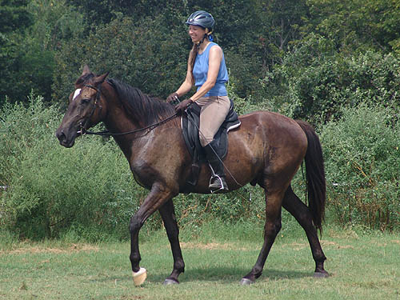
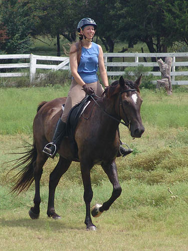

I finally got a short lesson
on Miaren. So neat to be riding
him like a grown up horse.
Well, like a really green horse,
but still great.
He had his ears back
on me the entire time. I'd rather he was eagerly looking forward, but Meg
liked that he was waiting to hear what I had to say.
He's a comfy ride, but
needs tons of circles and straight lines to learn what I'm asking for.
Pressure on the bit
irritates him.
But, he's better each
time about giving to the bit for bending.
It's never too early
to introduce trot poles (even if it's at the walk).
Miaren doesn't consider
going around things like this.

He was at first wary
of Meg on the ground, then started having gravity in her direction.
He's so much better
this year about standing around. Of course once there's excitement, we'll
have to see what happens.
He's a very friendly
horse.
Half halting heading
down the incline. Still the open mouth, but responding better and not going
hollow.
He tries to understand
what is expected. He wants to do his own thing, but he also wants to get
to play with the people. It's a fun cross with the pony attitude but TB
heart.
I love riding his trot.
It's light and effortless. He's still learning balance with a rider, but
he's pretty willing to trot on when asked.
We didn't do a lot of
trotting. Just enough to remind him of transitions and going forward when
asked.
A walk break on the
downhill short side of the arena.

One more trot set. More
of a jog here. I was happy for the response, but my trainer pushed us to
have more of a 'real' trot.